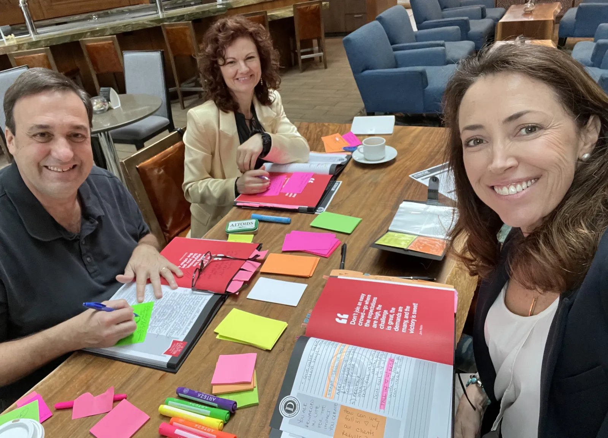
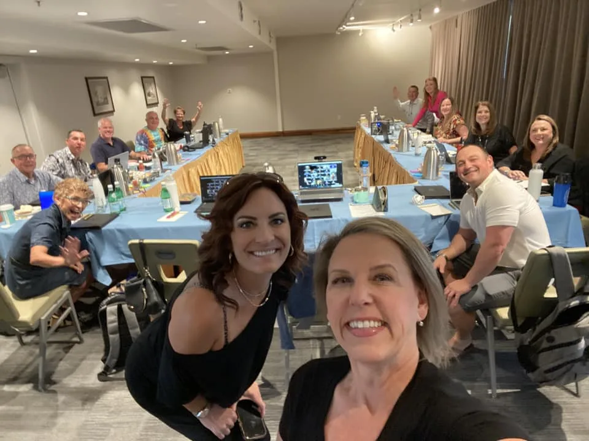
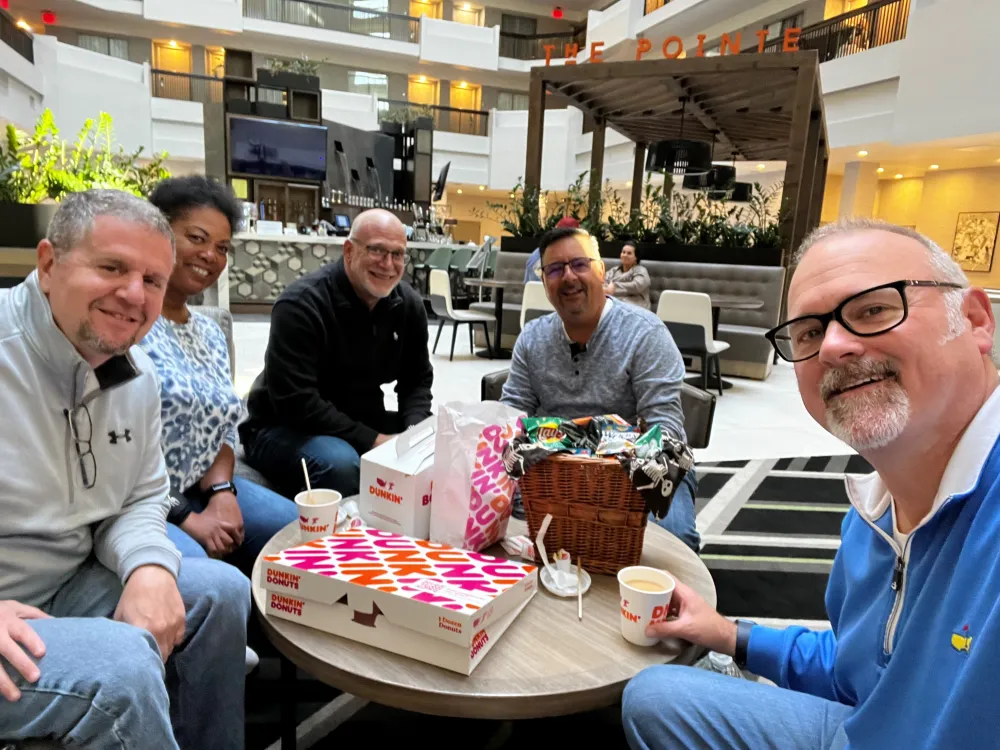
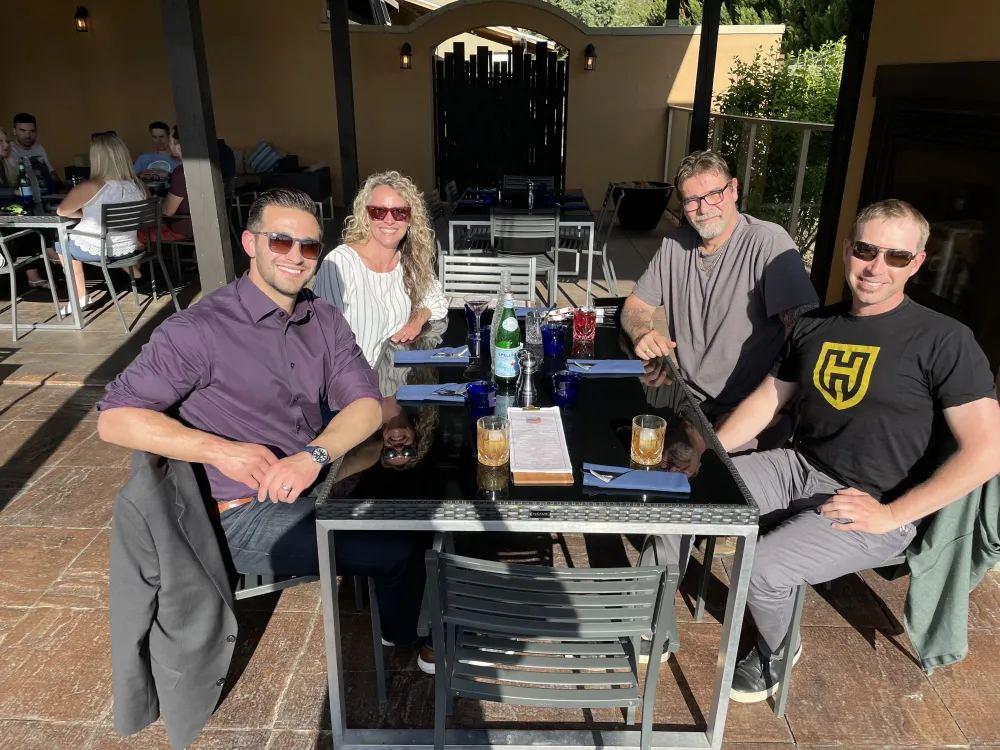

You’re In
Smart Move.
One Last Thing
One Seat Changes You. Your Team Changes Everything.



The Multiplier
What Your Team Walks Out With.
Members who compound fastest after Business Master Class have one thing in common. They did not come alone.
You
- The full playbook, in your hands.
- A clear plan for your next twelve months.
- You, back at the office and ready to build.
You and your people
- The full playbook, already in everyone’s hands.
- A plan your team helped build in the room, so they own it.
- Your whole company, back at the office and ready to build.
Every seat you add is one more person who comes home
already knowing exactly what to do.

No Names Needed
Grab The Seats. Name Them Later.
$895
$419/mo
Per additional seat, per month
Save $476 every month, on every seat
or $4,995 paid in full and save $5,000 a seat
Loading…